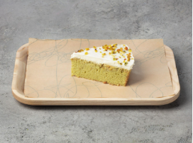

Три молока фісташка
- Бісквіт:
- Борошно
- Яйця
- Цукор, сіль
- Розпушувач
- Молоко, згущенка
- Желатин
- Фісташкове праліне
- Вода рози
- Чай матча
- Шапка:
- Молоко, вершки, згущенка
- Желатин
- Фісташка
Десерт з вологим бісквітом, що просочений фісташковою пастою та чаєм матча. Мега ніжний, що аж тане у роті.
Є одним із найсолодших десертів.